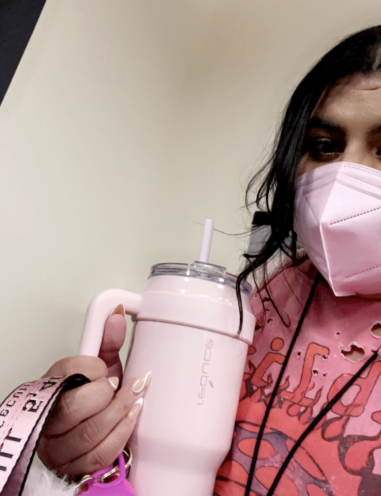

I have gone to private school my entire academic career. Through all the ups and downs, the schools I've gone to have made me who I am.
Let's take a look:
Pre-k: 4/5 lots of crying which is expected but overall a good timeKindergarden: 5/5 my Kindergarden teacher was my favoirte person I've ever met to this day and we had lots of nap time Elementry School: 2/5 lots of bullying both a victim and an attacker & got pushed down the slide several timesMiddle School: 2/5 "a bullied bully" as a close friend once saidHigh School: 3.89/5 had lots of friends and a good time! freshman year got my house tp-ed by the senior baseball team for no reason so that was traumatizing definitely love those memories

College: 4/5 would never guess I became a computer science major but I love all my eningeering friends and professors